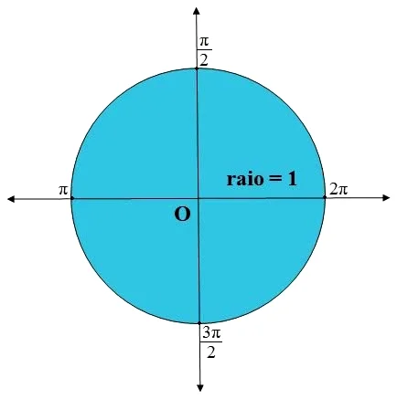

A circunferência trigonométrica, também conhecida como círculo trigonométrico ou ciclo, é uma representação gráfica que ajuda no cálculo das razões trigonométricas.
 Círculo trigonométrico e as razões trigonométricas
Círculo trigonométrico e as razões trigonométricas
• Ao seguir a simetria do círculo trigonométrico, observamos que o eixo vertical representa o seno , enquanto o eixo horizontal representa o cosseno. Cada ponto do círculo está relacionado aos valores dos ângulos em radianos.
• No círculo trigonométrico, a medida de um arco pode ser expressa em graus (°) ou em radianos (rad).
• Um grau (°) corresponde a 1/360 da circunferência. A circunferência é dividida em 360 partes iguais, todas conectadas ao centro, onde cada uma representa um ângulo de 1°.
• Um radiano (rad) corresponde à medida do arco da circunferência, cujo comprimento é igual ao raio da própria circunferência.
Figura do Círculo Trigonométrico dos ângulos expressos em graus e radianosMedidas Importantes a Lembrar
Quando dividimos o círculo trigonométrico em quatro
partes iguais, temos os quatro quadrantes que o constituem.
Para entenderes melhor, observa a imagem abaixo:
Importante Saberes Todos os Graus de Cada Quadrante!
Bem, essa resposta é muito fácil e consegues aprender facilmente através das imagens abaixo!
Para criares um círculo trigonométrico, podes começar por o construir sobre o plano de coordenadas cartesianas com o ponto O como centro. Este círculo possui um raio unitário e é dividido em quatro quadrantes.
